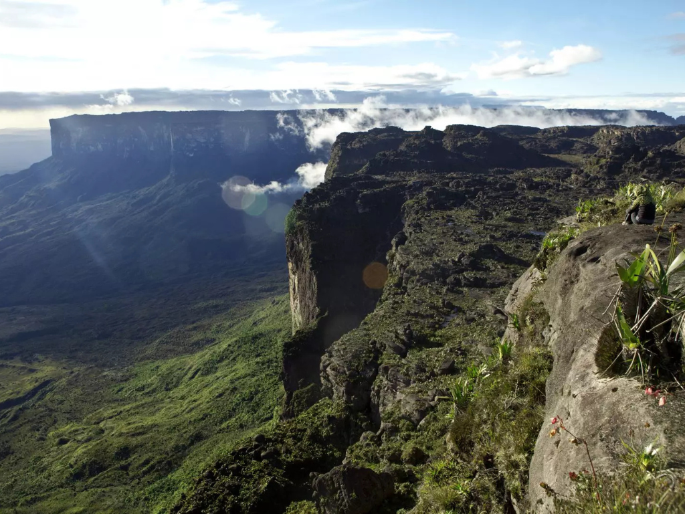

O Roraima é o estado mais ao norte do Brasil e integra a Região Norte do país, fazendo fronteira com a Venezuela e a Guiana. Conhecido por suas paisagens naturais impressionantes, Roraima abriga áreas de grande riqueza ambiental, com serras, savanas e extensas regiões da Floresta Amazônica. Sua capital, Boa Vista, é a única capital brasileira totalmente localizada no hemisfério norte e se destaca pela organização urbana e pelo crescimento econômico regional. O estado também possui forte presença de povos indígenas e importante diversidade cultural, além de atrações naturais como o Monte Roraima, uma das formações geológicas mais famosas da América do Sul. A economia local é baseada principalmente na agropecuária, no comércio e no turismo ecológico, tornando Roraima um importante patrimônio natural e cultural brasileiro.

Voltar